YJ Zhilong Mini
{kind=link}
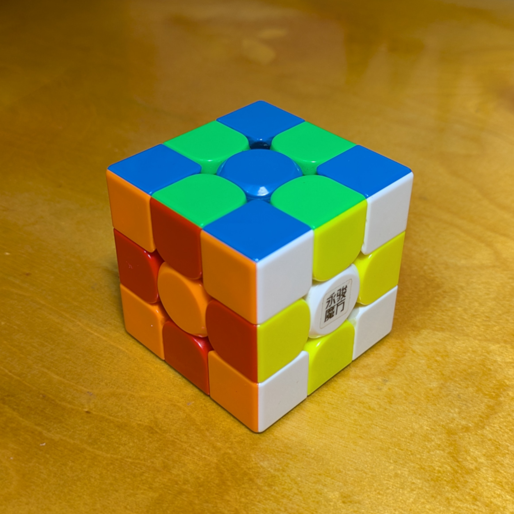
YJ8403 (2020)
YJ Zhilong Mini 3×3 M (50 mm).
The last time I was in the Philippines, I asked @prodigalson2112 to help me get a 3×3 cube that can fit in my pocket. We landed on this after some searching, but he was not able to give me the cube while I was there. He was eventually able to send it my way; thanks Maverick!
The cube's turning style is like that of the YJ MGC v2, which I also have, but it doesn't have the characteristic "teeth chattering" sound (if it does have it, it's much quieter). It has great flexibility and it cuts corners very well. The magnets hold the shape together without hampering the turning speed.
The axis distance can be adjusted via screw.
The colors are also almost identical to those on the MGC v2, with red and blue pieces that are sufficiently dark to make them stand against the orange and green pieces, respectively.
The package includes a set of extra magnets (perhaps to add magnet strength) and a screwdriver with a wing-nut style grip.
Best of all, it does fit in my pocket! Even though the difference from regular cubes is "only" 5-6 mm per side, the difference in heft and how it feels in the hand (not to mention the pocket) seems much more pronounced. I feel like I have to adjust to regular cubes when I get home.
I had no idea cubes of this size existed. This will be my go-to cube for when I am out and about.
Original post: https://www.instagram.com/p/DMfPRcxvlhP
Specifications
| Make | YJ |
|---|---|
| Model | Zhilong Mini |
| Edition/Variant | |
| Model no. | YJ8403 |
| Release year | 2020 |
| Magnets (edge-corner) | 🧲 |
|---|---|
| Magnets (core) | ❌ |
| Magnets (maglev) | ❌ |
| Stickerless | ⭕ |
| Internals | Split-piece design |
|---|---|
| Externals | Glossy plastic, half-bright colors |
| Adjustment | Philips screw - axis distance |
| Remarks | Originally two cubes; one given away |
Photos
{kind=link}
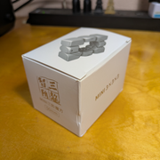
Cube box
{kind=link}
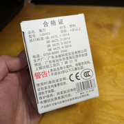
Box bottom (with model number)
{kind=link}
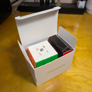
Box contents
{kind=link}
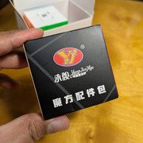
Accessories box
{kind=link}
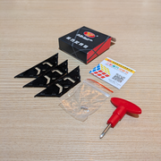
Accessories box contents
{kind=link}
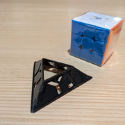
Assembled cube stand
{kind=link}
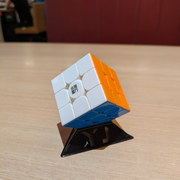
Cube on cube stand
{kind=link}
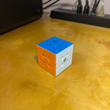
Cube (solved state)
{kind=link}
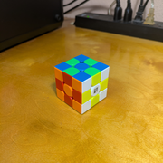
Cube (checkerboard state)
{kind=link}
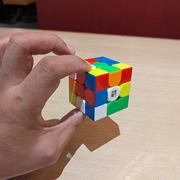
Cube (scrambled state)
Collections
This cube is part of the following collections: